Domina SIF de principio a fin
Guía completa, visual y práctica del sistema de facturación, inventarios, contabilidad y recursos humanos de ADA&S Accounting Technology.
Pensada para que pases de usuario nuevo a experto: cada módulo explicado, cada flujo paso a paso y los trucos que solo se aprenden con los años.
Manual de Usuario
Sistema Integral de Facturación
ADA&S Accounting Technology
Edición 2026
Guía del menú completo: 22 módulos, 21 capturas y 18 recorridos guiados.
Índice
- Cómo leer este manual3
- 1. Primeros pasos5
- 2. Anatomía de una pantalla9
- 3. Presupuesto13
- 4. Compras15
- 5. Ventas20
- 6. Cuentas por Cobrar24
- 7. Cuentas por Pagar28
- 8. Caja y Bancos32
- 9. Contabilidad34
- 10. Finanzas37
- 11. Inventarios38
- 12. Maestros41
- 13. Recursos Humanos48
- 14. Gastos Personales51
- 15. Transacciones55
- 16. Seguridad56
- 17. Flujos de trabajo58
- 18. Tips de experto61
- 19. Preguntas frecuentes63
- 20. Solución de problemas65
- 21. Glosario66
- 22. Examen final68
- 23. Anexos71
iCómo leer este manual
Este manual está escrito para usarse mientras trabajas. No hace falta leerlo completo: usa el índice, el buscador de arriba o los atajos para ir directo a lo que necesitas.
Convenciones visuales
💡 Tip — algo que te ahorra tiempo.
⚠️ Cuidado — una acción con consecuencias.
⛔ Peligro — puede dañar datos o afectar la contabilidad.
🔍 Experto — truco de usuario avanzado.
📌 Nota — aclaración o caso especial.
✅ Buena práctica — recomendación de control interno.
Sobre las imágenes
Las capturas reproducen las pantallas del sistema en alta resolución, tomadas de una empresa de demostración (COMERCIALIZADORA D Y G) con datos de prueba. Los montos, clientes y documentos que veas son ficticios o de ejemplo.
Toca cualquier imagen para abrir la galería: recorre las capturas con las flechas o el teclado (← →), amplía con el botón Ampliar o con doble clic para leer los detalles nítidos, y descarga la que necesites. Esc cierra la galería.
1Primeros pasos
1.1 ¿Qué es SIF?
SIF es el sistema de gestión de ADA&S Accounting Technology. Integra en una sola aplicación el ciclo comercial y financiero de la empresa:
1.2 Requisitos para trabajar
- Navegador moderno (Chrome, Edge o Firefox actualizados). Evita navegadores antiguos o modos de compatibilidad.
- Conexión de red a la base de datos de la empresa (LAN o servidor publicado).
- Usuario activo, rol asignado y equipo autorizado (ver Seguridad).
- Resolución recomendada: 1280 × 720 o superior. En pantallas pequeñas el sistema se adapta, pero las cuadrículas se leen mejor en escritorio.
?UUxD=…): no copies esa URL a otros, es tu sesión.
1.3 Iniciar sesión
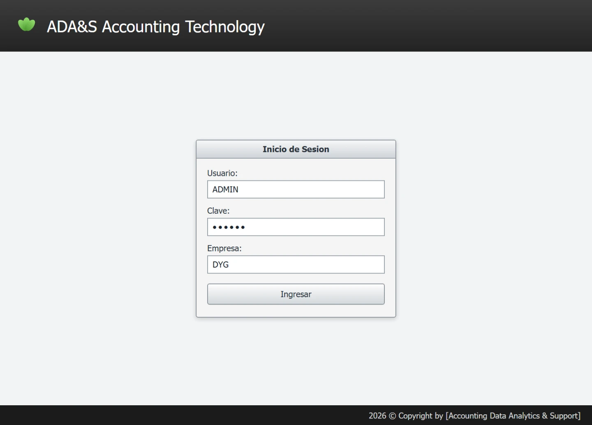
- Abre el sistema en la dirección que te entregó el administrador (por ejemplo
http://servidor/Login.aspx). - Usuario: escribe tu código de usuario, no tu correo. Normalmente es tu primer apellido o el código que te asignó el administrador (ej.
ADMIN). - Clave: tu contraseña personal. Distingue mayúsculas de minúsculas.
- Empresa: selecciona la empresa con la que vas a trabajar. Cada empresa tiene sus propios datos, maestros y consecutivos.
- Ingresar. Si todo es correcto entras directo a la pantalla principal.
1.4 La pantalla principal
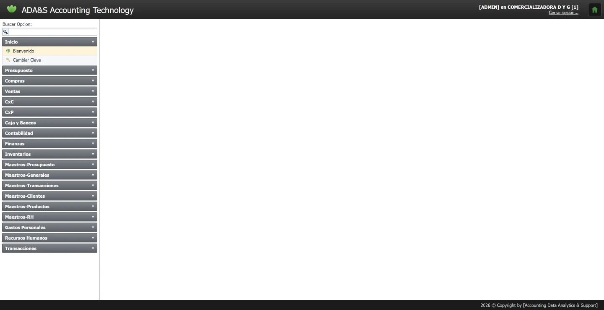
| Zona | Qué encuentras | Para qué sirve |
|---|---|---|
| Barra superior | Logo, usuario y empresa activa, Cerrar sesión, ícono de inicio | Saber siempre quién eres y en qué empresa estás trabajando. |
| Menú izquierdo | Grupos: Presupuesto, Compras, Ventas, CxC, CxP, Caja y Bancos, Contabilidad, Finanzas, Inventarios, Maestros, Gastos Personales, RR. HH., Transacciones, Seguridad | Navegar a cualquier pantalla. Cada opción abre en el área central. |
| Área central | La pantalla seleccionada | Aquí se consulta, se crea y se modifica. |
| Pie | Versión y copyright | Útil al reportar un problema. |
[ADMIN] en EMPRESA [1] de la barra superior.
1.5 Navegar sin perderte
- El menú está agrupado por proceso, no por orden alfabético: primero lo que vendes y compras, luego cómo lo cobras y pagas, y al final los maestros y la seguridad.
- Al abrir una opción, el área central cambia pero el menú sigue visible. Puedes saltar de módulo en módulo sin volver al inicio.
- Usa el ícono de inicio (casa) de la barra superior para regresar a la pantalla de bienvenida.
- Cada pantalla abre en una pestaña nueva del navegador cuando se invoca desde el menú; cierra las que ya no uses para no saturar la sesión.
1.6 Cambiar mi clave
- Inicio → Cambiar Clave.
- Escribe tu clave actual.
- Escribe la nueva clave y confírmala.
- Grabar. El sistema te pedirá iniciar sesión de nuevo.
Recorrido paso a paso: entrar y ubicar un módulo
Del formulario de ingreso al menú lateral, con la zona que interviene iluminada en cada paso.
2Anatomía de una pantalla
El 80 % de SIF usa el mismo esqueleto. Apréndelo una vez y lo reconocerás en todas partes.
2.1 La barra de herramientas
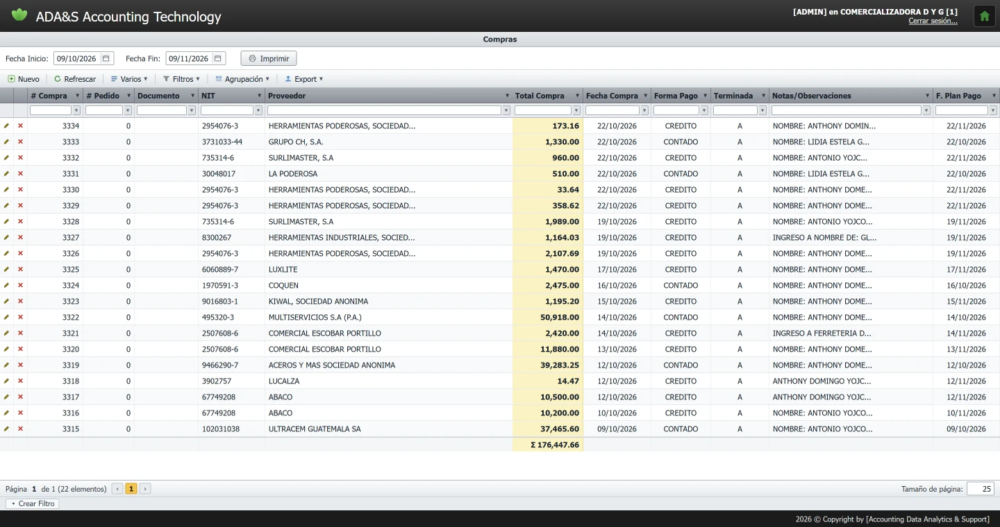
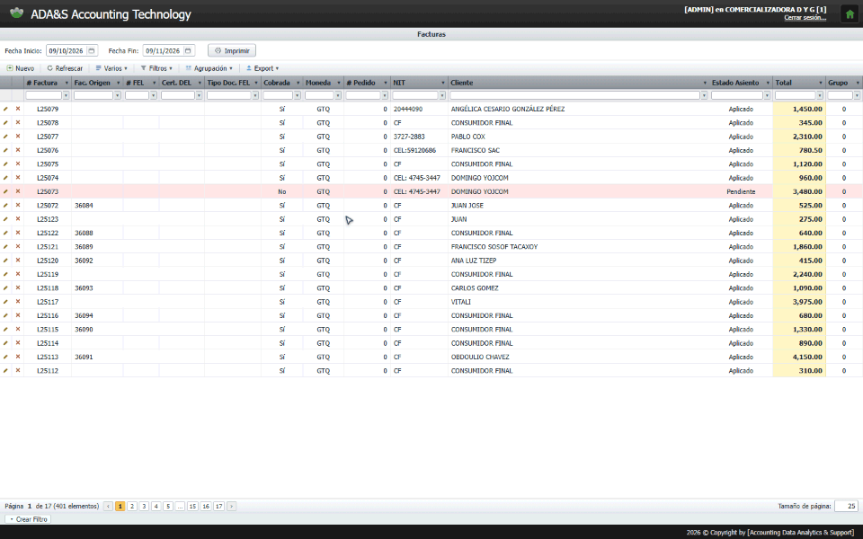
La misma secuencia en papel, paso a paso:
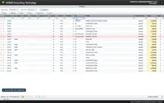
1 Clic en el filtro de la columna NIT
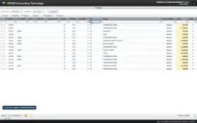
2 Con «CF» quedan 15 de las 401 facturas
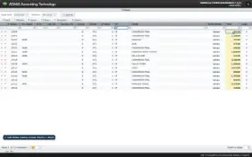
3 Cada factura conserva su total: 345,00 y 1.120,00
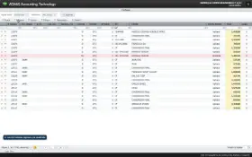
4 Las 401 facturas regresan a la cuadrícula
| Botón | Qué hace | Cuándo usarlo |
|---|---|---|
| Nuevo | Abre el formulario en blanco | Para crear un documento o maestro. |
| Refrescar / Actualizar | Vuelve a leer los datos del servidor | Cuando otro usuario acaba de grabar o sospechas que la lista está vieja. |
| Varios | SubTotales, Custom (columnas), Guardar Plantilla, Ver Plantillas | Para personalizar la vista y reutilizarla. |
| Filtros | Búsqueda, Limpiar, Edit Filtro, Fila Filtros, Filtros Columnas | Para encontrar un registro entre miles. |
| Agrupación | Agrupación, Limpiar Agrupación, Contraer, Expandir | Para resumir por cliente, fecha, proveedor, estado… |
| Export | Excel, Excel97, PDF, CSV | Para enviar información o analizarla fuera del sistema. |
2.2 La cuadrícula: tu herramienta más poderosa
- Ordena haciendo clic en el título de cualquier columna. Un segundo clic invierte el orden.
- Filtra por columna usando la fila de cajas bajo los títulos: escribe texto y la lista se reduce al instante.
- Mueve y cambia el ancho de columnas: arrastra el borde derecho del título.
- Agrupa: activa Agrupación y arrastra un título de columna a la franja gris superior.
- Página: abajo a la izquierda cambias de página; a la derecha defines el Tamaño de página (20, 50, 100…).
- Desplázate horizontalmente con la barra inferior: hay muchas más columnas de las que se ven.
2.3 Los íconos de cada fila
A la izquierda de cada registro hay botones de acción:
- Modificar abre el registro en el formulario para editarlo.
- Eliminar borra lógicamente el registro (normalmente cambia el estado a inactivo o anulado).
- Terminar aparece en documentos con ciclo de vida (por ejemplo, una venta pendiente de entrega o de cobro).
2.4 Guardar tu propia vista (plantillas)
- Acomoda columnas, orden, filtros y agrupación a tu gusto.
- Varios → Guardar Plantilla.
- Ponle un nombre claro (ej. “Ventas del mes por vendedor”).
- La próxima vez entra por Varios → Ver Plantillas y selecciónala.
2.5 Exportar bien (y rápido)
Excel / Excel97
Ideal para análisis, tablas dinámicas y envío a contabilidad. Respeta las columnas visibles y los filtros activos.
Consejo: antes de exportar, oculta las columnas que no necesitas. El archivo será más limpio y liviano.
PDF / CSV
PDF para imprimir o enviar como evidencia. CSV para importar en otro sistema o procesar con scripts.
Consejo: en PDF activa Pie/Página para que salga la fecha y el usuario que generó el reporte.
2.6 Formularios y modales
- Los formularios se abren en una ventana modal sobre la lista.
- Grabar guarda y cierra; Cancelar cierra sin guardar.
- Los campos obligatorios se marcan o se validan al grabar: si falta uno, el sistema no cierra y te señala el campo.
- En documentos con detalle (factura, compra, asiento) primero se graba la cabecera y luego se agregan las líneas con Nuevo Detalle.
3Presupuesto Módulo
Controla el dinero planeado contra el ejecutado, organizado por proyecto, rubro, renglón y categoría. Es el módulo que responde a la pregunta: “¿en qué se está yendo el presupuesto?”.
| Pantalla | Qué hace | Ruta |
|---|---|---|
| Presupuesto | Captura y consulta del presupuesto por proyecto | Presupuestos/DetallePresupuesto.aspx |
| Versiones | Historial de versiones de un presupuesto | Presupuestos/DetallePresupuesto_VerPresupuestoVersiones.aspx |
| Ejecución | Compara lo presupuestado con lo realmente ejecutado | Presupuestos/EjecucionPresupuesto.aspx |
Cómo armar un presupuesto
- Prepara los maestros (Maestros-Presupuesto): Proyecto, Nivel, Renglón, Rubro y Categoría. Sin esta estructura el presupuesto no se puede clasificar.
- Abre Presupuesto → Nuevo y elige el proyecto y la versión.
- Agrega líneas con Nuevo Detalle: rubro, renglón, categoría, concepto, monto.
- Graba y revisa el total contra el monto aprobado.
- Cuando cambie el alcance, crea una nueva versión en lugar de editar la anterior: así conservas la trazabilidad.
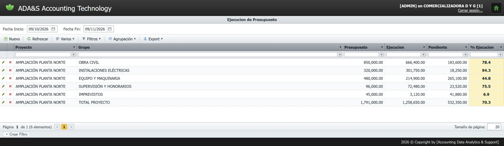
Recorrido paso a paso: presupuesto contra ejecución
La pantalla de Ejecución: lo aprobado, lo gastado y lo que queda, grupo por grupo.
4Compras Módulo
Todo lo que la empresa compra: desde la orden de compra hasta la factura del proveedor, con importaciones y análisis.
| Pantalla | Qué hace |
|---|---|
| Orden de Compra | Solicitud formal al proveedor; puede aprobarse y luego convertirse en compra. |
| Compra | Registro de la factura del proveedor; afecta inventario y CxP. |
| Importación de compras | Carga masiva de compras desde archivo. |
| Análisis Órdenes de Compra | Órdenes pendientes, aprobadas y su avance. |
| Análisis Compras | Compras por período, proveedor, producto y costo. |
Ciclo de una compra
- Orden de Compra → Nuevo. Elige proveedor, fecha y forma de pago.
- Agrega el detalle: producto, cantidad, costo y, si aplica, lote y fecha de vencimiento.
- Aprueba la orden (según tu rol) para que pueda comprarse.
- Compra → Nuevo. Registra la factura del proveedor; puedes partir de la orden.
- Confirma el ingreso a inventario. El costo actualiza el kardex y la CxP queda registrada.
- Paga desde CxP o Caja y Bancos según la forma de pago.
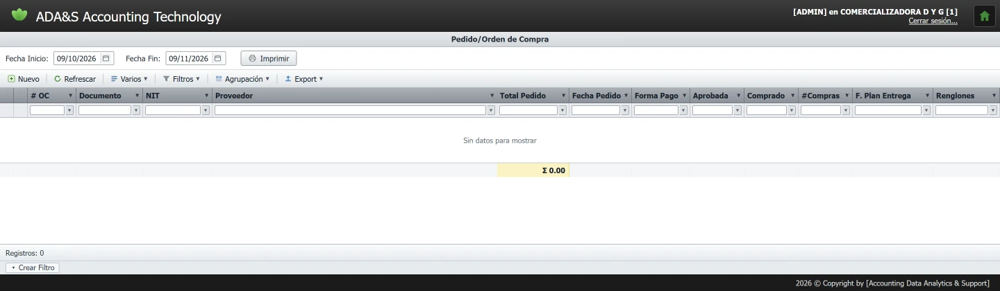
Recorrido paso a paso: comprar y recibir en bodega
De la factura del proveedor a la entrada al inventario y el saldo corrido del kardex.
Importación de compras desde el reporte FEL
Cuando el proveedor entrega un reporte de compras en Excel en lugar de capturar factura por factura, usa Importación de Compras: elige el producto y la forma de venta y pago con que se registrará el lote, carga el archivo y revisa la pestaña Excel cargado antes de importar. Las columnas del reporte tienen que ser las de la plantilla FEL: fecha de emisión, autorización, tipo de DTE, serie, número, NIT y nombre del emisor, estado, moneda, gran total y marca de anulado. Si falta una, la carga se rechaza en vez de crear compras incompletas.
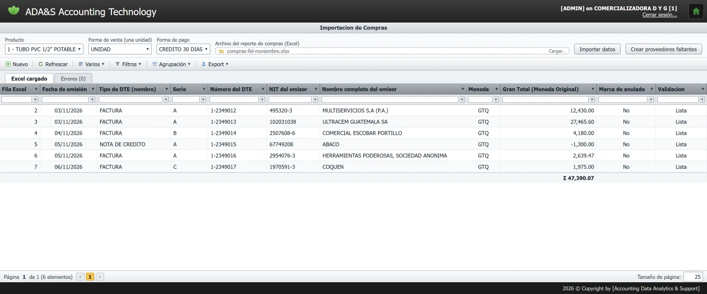
Recorrido paso a paso: importar el reporte de compras
El panel de carga, las pestañas del lote y la validación de cada fila del Excel.
5Ventas Módulo
El corazón comercial: cotizas, tomas pedidos, facturas y das seguimiento. Con facturación electrónica (FEL) integrada.
| Pantalla | Qué hace | Efecto |
|---|---|---|
| Cotización | Propuesta de precio al cliente; puede tener versiones | No mueve inventario ni contabilidad |
| Pedido de Venta | Compromiso de entrega | Reserva/compromete, aún no factura |
| Venta | Factura; documento fiscal y contable | Mueve inventario, CxC, caja y contabilidad |
| Seguimiento Pedidos | Planificación de entregas pendientes | Solo consulta y planificación |
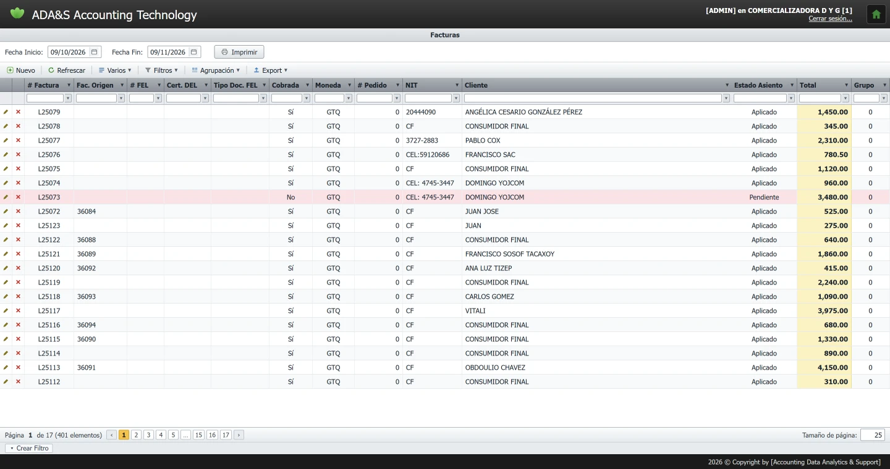
Ciclo de venta completo
- Cotización → Nuevo. Cliente, fecha de validez, productos y precios.
- Envía o imprime la cotización (Export → PDF).
- Si el cliente acepta, genera el Pedido de Venta.
- Venta → Nuevo. Puedes partir del pedido para no recapturar.
- Confirma forma de pago (contado o crédito) y moneda.
- Graba la factura. Se descuenta inventario y nace la cuenta por cobrar.
- Genera el FEL si la factura es electrónica; verifica número, serie y autorización.
- Cobra desde CxC y marca la factura como cobrada.
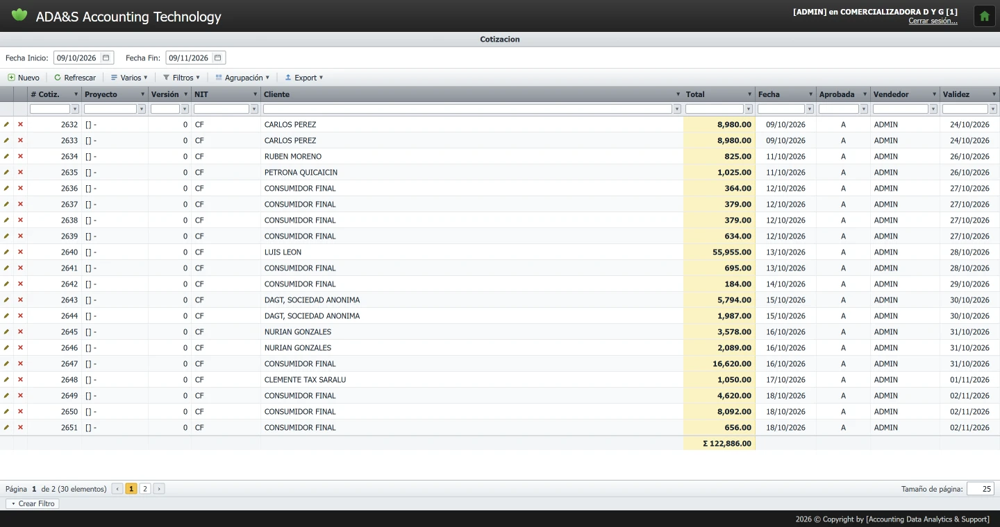
Recorrido paso a paso: facturar una venta
Período, barra de acciones, la fila seleccionada, la columna Cobrada y la paginación, sobre el listado real de facturas.
Recorrido paso a paso: cotizar y convertir en venta
El listado de cotizaciones: rango de fechas, versiones, total, columna Aprobada y paginación.
Seguimiento de pedidos
Los pedidos de venta en un calendario, para responder la pregunta que ningún listado contesta de un vistazo: ¿qué hay que entregar esta semana? Cada pedido aparece en su fecha con la hora y el cliente; el color distingue el estado y las vistas cambian de día a mes. El rango de fechas de arriba acota lo que se carga: si el calendario sale vacío, casi siempre es el rango.
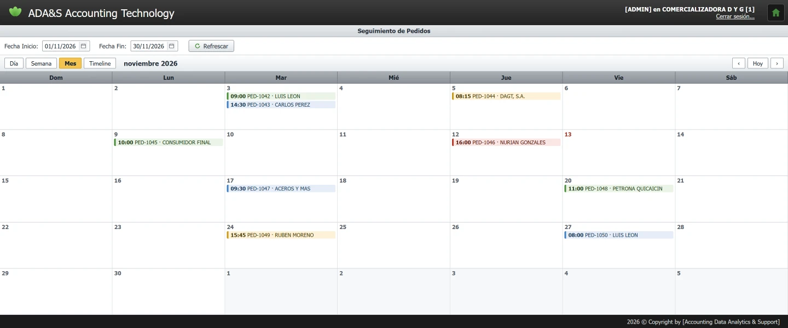
Recorrido paso a paso: planificar las entregas
Rango de fechas, vistas del calendario y lectura de un pedido en su día.
6Cuentas por Cobrar Módulo
Todo lo que los clientes te deben, documento por documento, con antigüedad y análisis.
| Pantalla | Qué responde |
|---|---|
| Consulta CxC Resumen | ¿Cuánto me debe cada cliente, en total? |
| Consulta CxC Documentos | ¿Qué documento específico está pendiente y desde cuándo? |
| Análisis CxC Documentos | ¿Cómo se comporta la cartera por antigüedad y cliente? |
| Nota Crédito/Débito | Ajustes y devoluciones que afectan el saldo del cliente. |
Rutina de cobranza
- Abre Consulta CxC Resumen y ordena por saldo descendente.
- Identifica los clientes con mayor deuda y más antigüedad.
- Entra a Consulta CxC Documentos, filtra por ese cliente y revisa factura por factura.
- Contacta al cliente con el detalle exacto (documento, fecha, monto, días vencidos).
- Registra el pago y verifica que la factura quede marcada como cobrada.
En el menú hay dos entradas parecidas: Nota Crédito/Débito y Nota Credito/Debito Codex. La segunda muestra el mismo listado pero no tiene botones para guardar: es una vista de consulta. Registra y corrige siempre desde la primera.
La captura de esta pantalla es la Figura 22 (Documentos por cobrar), en el anexo final.
Recorrido paso a paso: cobrar la cartera del día
Cómo leer los documentos por cobrar: fechas, cliente, documento con su FEL y el valor pendiente real.
Análisis de la cartera por ruta y vendedor
Análisis CxC Documentos muestra los mismos documentos que la consulta, con las mismas cifras, y añade tres datos que sirven para cobrar: el record del cliente, la ruta o sector y el rutero o vendedor que lo atiende. Con esas columnas el listado deja de ser una lista de deudas y pasa a ser un plan de trabajo: se agrupa por ruta, se reparte entre vendedores y se ve quién acumula atrasos.
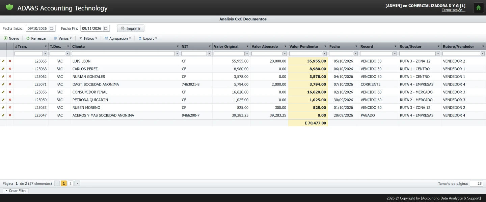
Recorrido paso a paso: repartir la cobranza por ruta
Rango de fechas, barra de acciones, el pendiente de cada documento y las columnas de ruta y vendedor.
7Cuentas por Pagar Módulo
Lo que la empresa debe a sus proveedores. Es el espejo de CxC y la base para programar pagos sin romper el flujo de caja.
Consulta CxP Resumen
Saldo total por proveedor. Úsala para negociar plazos y priorizar pagos.
Consulta CxP Documentos
Cada compra pendiente, con fecha de vencimiento y saldo. Es la que se usa para programar la semana de pagos.
Programar pagos sin quedarte sin efectivo
- Exporta CxP Documentos a Excel y ordena por fecha de vencimiento.
- Cruza con el saldo disponible en Caja y Bancos.
- Prioriza: vencidos, proveedores críticos y descuentos por pronto pago.
- Autoriza el pago y regístralo (Caja y Bancos o el módulo de pagos).
- Verifica que la compra quede marcada como pagada.
La captura de esta pantalla es la Figura 23 (Documentos por pagar), en el anexo final.
La deuda por proveedor, en una sola línea
El detalle dice qué documento se debe; el resumen dice a quién. Antes de repartir pagos, esta vista evita dejar sin abono a un proveedor crítico por revisar factura a factura.
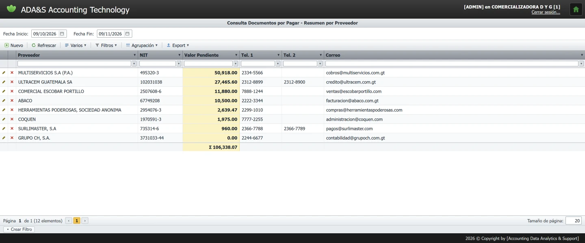
Recorrido paso a paso: leer la deuda por proveedor
Del rango de fechas al total: quién hay que pagar, cuánto y a qué correo pedirle el estado de cuenta.
Recorrido paso a paso: programar los pagos de la semana
Del rango de fechas al valor pendiente, pasando por el proveedor y su NIT: lo que se mira antes de autorizar un pago.
8Caja y Bancos Módulo
El dinero real: cajas, cuentas bancarias, movimientos, cheques y tipos de cambio.
| Pantalla | Uso |
|---|---|
| Cheques | Consulta y control de cheques emitidos y recibidos. |
| Movimientos Bancarios | Depósitos, retiros, transferencias y notas bancarias. |
| Movimientos de Cajas | Ingresos y egresos de caja chica o caja general. |
| Cajas y Cuentas Bancarias | Catálogo de cajas y cuentas con su saldo. |
| Banco / Moneda / Tipo Cambio | Maestros de bancos, monedas y tipos de cambio. |
| Tipo Movimiento Bancario / Tipo Cuenta Bancaria | Clasificación de movimientos y cuentas. |
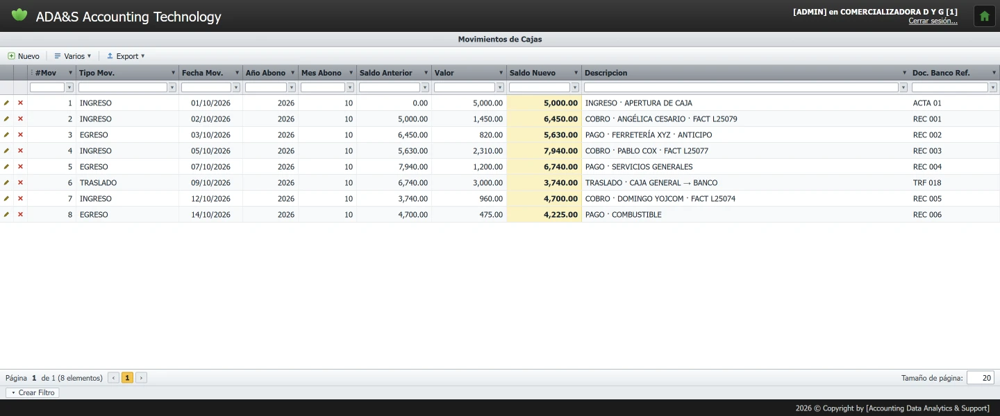
Registrar un movimiento de caja
- Movimientos de Cajas → Nuevo.
- Selecciona la caja y el tipo de movimiento (ingreso, egreso, traslado).
- Escribe la fecha, el valor y una descripción clara.
- Si aplica, vincula el documento de referencia (factura, compra, cheque).
- Grabar y verificar el Saldo Nuevo.
TIPO · TERCERO · DOCUMENTO (ej. PAGO · FERRETERÍA XYZ · FACT 3341). En seis meses nadie recuerda qué era “pago varios”.
Recorrido paso a paso: cuadrar la caja del día
Registrar el movimiento, seguir la cadena de saldos, leer el saldo nuevo y cerrar con el conteo del pie.
9Contabilidad Módulo
El registro formal: catálogo de cuentas, asientos, tipos de cuenta y ejercicios contables. Aquí se refleja todo lo que hacen los demás módulos.
| Pantalla | Qué hace |
|---|---|
| Asiento Contable | Registro de partida doble con cabecera y detalle (debe/haber). |
| Cuenta Contable | Catálogo de cuentas contables. |
| Tipo Cuenta | Clasificación (activo, pasivo, ingreso, gasto, capital…). |
| Ejercicio Contable | Períodos y ejercicios: apertura, cierre y bloqueo. |
Crear un asiento
- Asiento Contable → Nuevo. Fecha, concepto, tipo y referencia.
- Graba la cabecera.
- Agrega líneas con Nuevo Detalle: cuenta, debe o haber, y descripción.
- Verifica que debe = haber. Si no cuadra, el asiento no debe grabarse.
- Revisa el Estado del Asiento (borrador, aplicado, anulado).
La captura de esta pantalla es la Figura 24 (Asientos contables), en el anexo final.
Recorrido paso a paso: revisar un asiento cuadrado
Período, concepto, estado y el par debe/haber que decide si el asiento se puede grabar.
10Finanzas Módulo
Visión consolidada del resultado de las operaciones.
Balance de Operaciones
Resume ingresos, costos y gastos del período para mostrarte si la operación deja utilidad. Úsalo para revisar tendencias mes a mes y para detectar meses atípicos.
11Inventarios Módulo
Existencias, traslados entre bodegas, ajustes y la historia completa de cada producto en el kardex.
| Pantalla | Qué hace |
|---|---|
| Inventario | Existencias actuales por producto y bodega. |
| Traslado | Mueve existencias entre bodegas o sucursales. |
| Ajuste | Corrige diferencias por conteo físico, merma o daño. |
| Kardex | Historial de entradas, salidas y saldos por producto. |
| Modificación Rápida (+Precio) | Cambia precios y costos en lote. |
| Modificación Rápida (+Existencia) | Ajusta existencias en lote. |
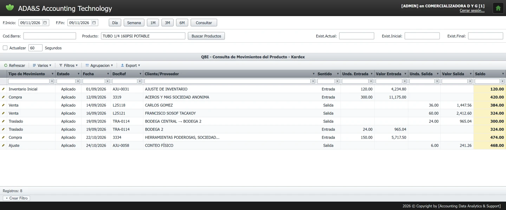
Consultar el kardex de un producto
- Define F.Inicio y F.Fin, o usa los botones Día / Semana / 1M / 3M / 6M.
- Escribe el código de barra o usa Buscar Productos.
- Pulsa Consultar.
- Revisa las columnas Entrada, Salida y Saldo: cada fila es un movimiento con su documento de origen.
- Haz doble clic en una fila para ver el documento que generó el movimiento.
Recorrido paso a paso: consultar existencias
Del maestro de productos al kardex: precio de venta, filtro de consulta y saldo de la última línea.
12Maestros Catálogos
Los maestros son la base de todo: si un maestro está mal, todos los documentos que lo usan salen mal. Es la sección que más disciplina exige.
12.1 Clientes
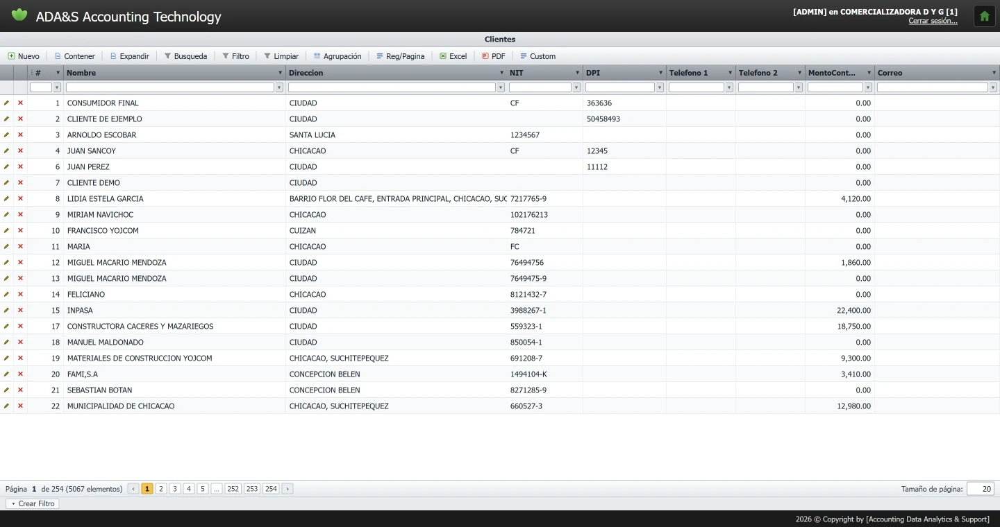
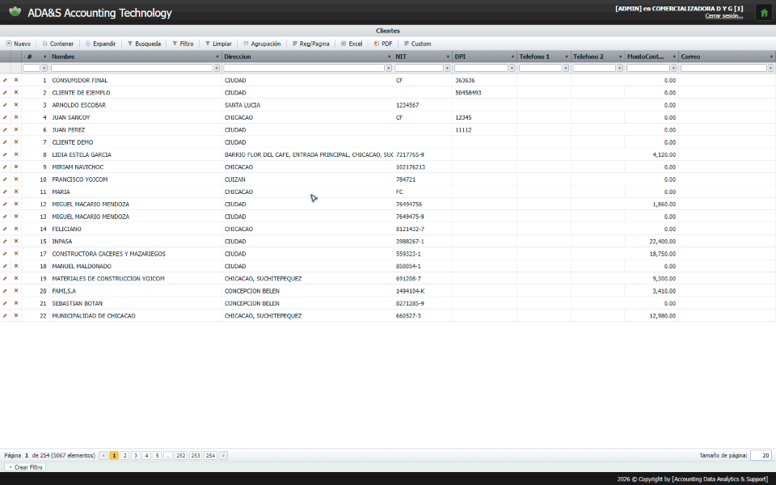
La misma secuencia en papel, paso a paso:
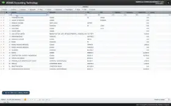
1 Clic en el filtro de la columna Nombre
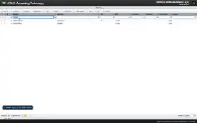
2 «JUAN» deja 2 de los 5.067 clientes
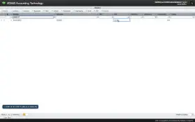
3 Doble clic en el DPI lo edita en la misma fila
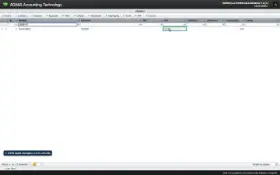
4 El DPI quedó corregido a 11113 en la fila
| Maestro | Para qué |
|---|---|
| Cliente | Datos fiscales, dirección, contacto, límites de crédito. |
| Sector | Clasificación comercial del cliente. |
| Estado | Estado del cliente dentro del sistema (activo, bloqueado…). |
| Record | Record de pago / comportamiento. |
| Tipo Documento | Tipo de identificación (NIT, DPI, pasaporte…). |
| Perfil de Descuentos | Reglas de descuento reutilizables. |
Recorrido paso a paso: buscar y leer un cliente
Barra de maestros, filtro por columna y las columnas que deciden si la factura sale bien: nombre, NIT y DPI.
12.2 Productos
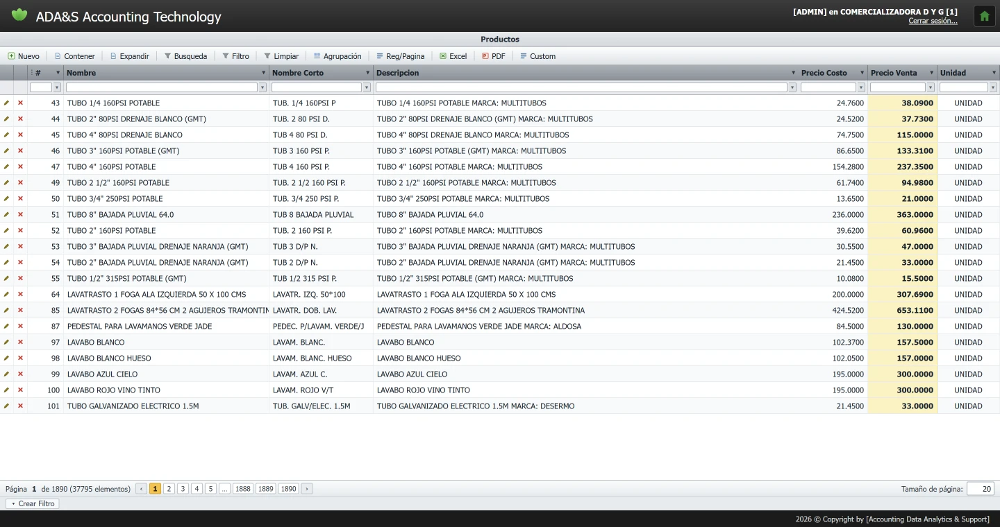
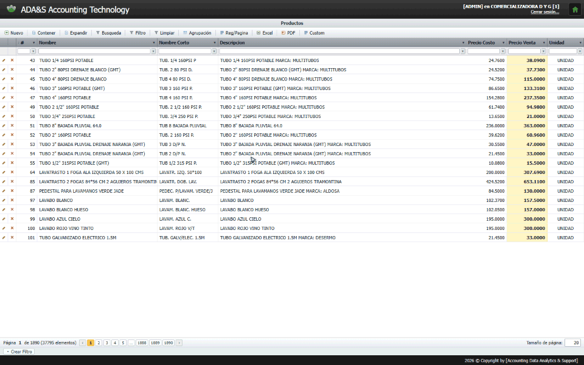
La misma secuencia en papel, paso a paso:
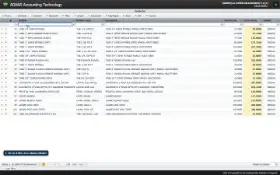
1 Clic en el filtro de la columna Nombre
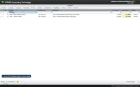
2 De los 37.795 productos quedan 2 con esa medida
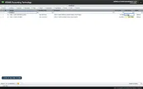
3 Doble clic: hoy cuesta 115.0000
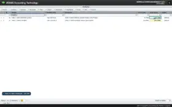
4 Precio de venta actualizado a 120.7500
Buen nombre de producto
- Descripción completa y específica (medida, color, marca).
- Nombre corto de 10–15 caracteres, sin abreviaturas ambiguas.
- Código de barra único; si no tiene, usa un código interno consistente.
- Unidad de medida correcta (el precio depende de ella).
Maestros que lo rodean
Forma, Marca, Categoría, Fabricante, Presentación, Componente, Unidad de Medida, Tipo y Familia. Todos alimentan filtros y reportes: si están incompletos, los análisis salen incompletos.
Producto estándar: la plantilla que evita capturas repetidas
Un producto estándar guarda lo que se repite —fabricante, marca, presentación, costo— y de él salen los productos concretos. Se captura una vez y se reutiliza: el producto real solo aporta su código y su existencia.
| Campo | Qué se guarda | Para qué sirve |
|---|---|---|
| # | Lo asigna el sistema | Identificar la plantilla en el catálogo y en los reportes. |
| Código Heredado | El código del fabricante o del proveedor | Buscar el producto por el código que ya viene en la caja, sin traducirlo. |
| Nombre / Nombre Corto | El nombre completo y su versión para columnas estrechas | El largo va en la factura; el corto, en el listado y en la etiqueta. |
| Fabricante y Marca | Se capturan una vez para toda la familia | Filtros y reportes por marca sin repetir el dato en cada alta. |
| Presentación y Forma | La unidad en que se vende (unidad, caja de 6, metro) | Convertir cantidades entre compra y venta sin recalcular a mano. |
| Precio Costo / Precio Venta | El costo de referencia y el precio sugerido | El producto que la use hereda ambos y puede ajustarlos. |
| Existencia | Siempre cero: la plantilla no tiene stock | La existencia real vive en el producto concreto, no en el molde. |
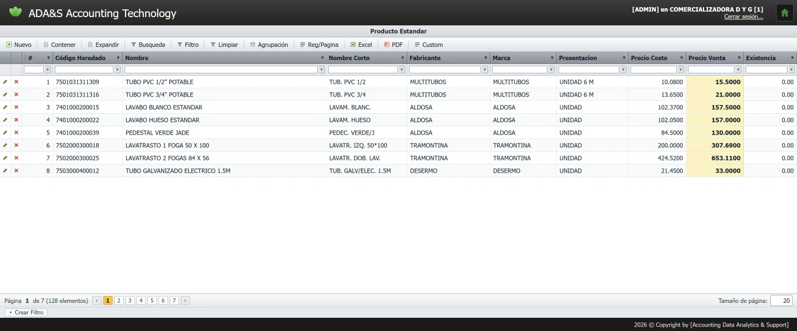
Recorrido paso a paso: crear desde un producto estándar
Qué columnas definen la plantilla y cuáles se completan después, en el producto real.
Recorrido paso a paso: leer el catálogo de productos
Nombre largo y corto, costo, venta y unidad de medida: las columnas que después usan la factura y el kardex.
12.3 Proveedores y maestros generales
- Proveedor: datos fiscales, contacto y condiciones. Se usa en compras, órdenes y CxP.
- Forma de Pago: define si es contado, crédito, si aplica a compras/ventas y si permite cuotas.
- Tipo de Ajuste: clasifica los ajustes de inventario (merma, daño, corrección).
- Período: abre y cierra los períodos de operación.
12.4 Maestros de Presupuesto
Proyecto, Nivel, Renglón, Rubro y Categoría forman el árbol de clasificación presupuestaria. Definirlos bien al inicio evita reclasificar cientos de líneas después.
13Recursos Humanos Módulo
Empleados, estructura organizacional, hojas de acción y el módulo de consulta médica.
| Pantalla | Qué hace |
|---|---|
| Empleado | Expediente del empleado: datos, departamento, puesto, estado. |
| Departamento | Estructura de departamentos de la empresa. |
| Puesto | Catálogo de puestos de trabajo. |
| Hoja de Acción | Permisos, vacaciones, suspensiones, promociones, cambios de salario, retiros. |
| Clínica | Clínicas donde se atiende al personal. |
| Diagnóstico | Catálogo de diagnósticos médicos. |
| Consulta Médica | Registro de la atención: mediciones, diagnóstico y descripción. |
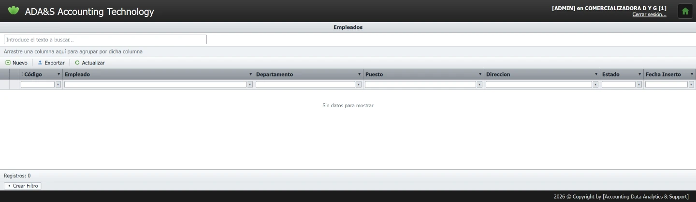
Hoja de acción: el expediente del cambio
- Hoja de Acción → Nuevo.
- Selecciona el empleado y el estado de la acción.
- Marca el tipo: permiso, vacaciones, suspensión, promoción, cambio de puesto, planilla, salario, traslado, retiro, renuncia…
- Completa los campos actual y nuevo (puesto, salario, departamento, fechas).
- Registra jefe inmediato, gerente de área y gerente de RR. HH. según el flujo de aprobación.
- Grabar y dar seguimiento al estado hasta que quede aplicada.
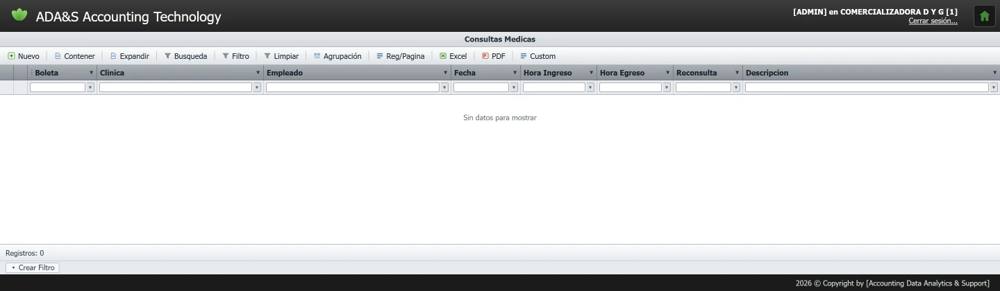
Consulta médica en 4 pasos
- Consulta Médica → Nuevo.
- Elige clínica, empleado, fecha y no. de boleta. Marca Reconsulta si aplica.
- Registra hora de ingreso, hora de egreso y la descripción de la consulta.
- En las pestañas Mediciones y Diagnósticos agrega peso, estatura, signos y el diagnóstico con su tipo (principal/secundario).
Recorrido paso a paso: buscar un empleado
Búsqueda, barra de acciones y columnas del catálogo de empleados.
Recorrido paso a paso: registrar una consulta médica
De la barra de acciones a las columnas de la consulta: clínica, empleado, horas de atención y reconsulta.
14Gastos Personales Módulo
Control de gastos y salarios desde la perspectiva de la persona, no de la empresa.
14.1 Categoría de gasto
Es el maestro que decide cómo se agrupa cada gasto en los reportes. La descripción es el único dato: por eso conviene que sea corta, única y en mayúsculas para que el buscador la encuentre igual siempre.
| Campo | Qué se captura | Para qué sirve |
|---|---|---|
| # | Lo asigna el sistema | Referenciar la categoría sin depender del texto. |
| Descripción | El nombre de la clasificación, corto y en mayúsculas | Es lo único que se escribe y lo que después agrupa el reporte de gastos. |
| Uso | No se captura: se elige al registrar el gasto | Una categoría sin gastos no molesta; un gasto sin categoría deja el reporte incompleto. |
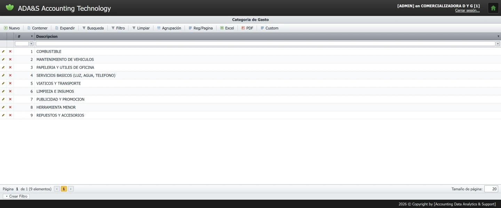
Recorrido paso a paso: clasificar un gasto
De la barra de acciones a la descripción de la categoría: lo único que se captura y lo que después filtra el reporte.
14.2 Período de salario
Define los tramos de ingreso —quincenas, meses o bonos— con su fecha de inicio, su fecha de fin y su estado. Un período cerrado no admite movimientos; abrirlo o cerrarlo es lo que separa un mes revisado de uno que todavía se puede tocar.
| Campo | Qué se captura | Para qué sirve |
|---|---|---|
| # | Lo asigna el sistema | Identificar el período en los reportes de nómina. |
| Descripción | Qué cubre: «QUINCENA 19», «BONO 14 AVO» | Es el nombre que verá quien registre el ingreso; debe decir el tramo sin abrir el calendario. |
| Inicio y Fin | El primer y el último día del tramo | Definen qué movimientos caen dentro del período y cuáles quedan fuera. |
| Estado | Cerrado, Abierto o Pendiente | Cerrado bloquea cambios, Abierto permite registrar y Pendiente todavía no empieza. |
| Solapamiento | No se captura: se evita al crear | Dos períodos con fechas cruzadas parten la planilla en dos y descuadran la comparación. |
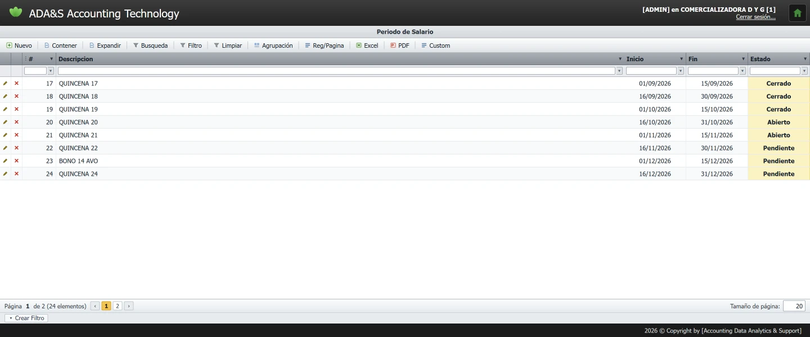
Recorrido paso a paso: abrir y cerrar un período
Nombre, fechas y estado: lo que hay que mirar antes de cerrar el mes.
15Transacciones Módulo
Registros de seguimiento personal y operativo: peso corporal y consumo de combustible.
Registro de Peso
Guarda peso, estatura, medidas, horas de sueño y comentarios. Sirve para ver tendencia en el tiempo, no para diagnóstico médico.
Tip: mide siempre en las mismas condiciones (misma hora, misma báscula) para que la tendencia sea comparable.
Registro de Combustible
Registra cargas, kilometraje y rendimiento por vehículo. Detecta consumos anormales y mantenimientos oportunos.
Tip: anota el odómetro en cada carga; sin él no puedes calcular rendimiento real.
16Seguridad Módulo
Quién puede hacer qué, desde dónde y con qué equipo. Es el módulo que protege todo lo demás.
| Pantalla | Qué controla |
|---|---|
| Empresa | Datos de la empresa: razón social, NIT, configuración, tema. |
| Usuario | Usuarios, claves y datos personales. |
| Objeto | Catálogo de pantallas y acciones del sistema (permisos atómicos). |
| Rol | Agrupación de permisos que se asigna a los usuarios. |
| Desbloqueo Usuarios | Libera usuarios bloqueados por intentos fallidos. |
| Consulta Eventos | Bitácora de auditoría: quién hizo qué y cuándo. |
| Estación de Trabajo | Equipos registrados desde donde se conecta el sistema. |
| Equipos Autorizados | Restringe el acceso a equipos específicos. |
Crear un usuario correctamente
- Usuario → Nuevo. Código, nombre completo y nombre corto.
- Asigna la empresa y el rol mínimo necesario.
- Define una clave temporal y obliga el cambio en el primer ingreso.
- Si usas equipos autorizados, registra el equipo del usuario.
- Prueba el acceso con el usuario real antes de entregarlo.
17Flujos de trabajo completos
Los módulos por separado no cuentan la historia. Aquí están los procesos de punta a punta, tal como se trabajan en el día a día.
Dónde está cada recorrido
Cada recorrido vive en el módulo que explica, sobre la captura de esa pantalla: 1. Primeros pasos (entrar y ubicar un módulo), 3. Presupuesto (presupuesto contra ejecución), 4. Compras (comprar y recibir en bodega), 5. Ventas (facturar una venta y cotizar), 6. Cuentas por Cobrar (cobrar la cartera del día), 7. Cuentas por Pagar (programar los pagos), 8. Caja y Bancos (cuadrar la caja del día), 9. Contabilidad (revisar un asiento), 11. Inventarios (consultar existencias), 12. Maestros (buscar un cliente y leer el catálogo de productos) y 13. Recursos Humanos (buscar un empleado y registrar una consulta médica).
En cada paso se ilumina la zona exacta de la pantalla que interviene: avanza con los botones, las flechas del teclado o deslizando el dedo en el teléfono. Los recuadros se calcularon sobre la geometría real de cada pantalla del sistema; si una pantalla cambia de distribución, hay que ajustar su recorrido junto con la captura.
17.1 Ciclo de venta (de la cotización al cobro)
- Cotización — se envía al cliente y se registra la versión aceptada.
- Pedido de Venta — se compromete la entrega.
- Venta — se factura; baja inventario y nace la CxC.
- FEL — se genera y certifica el documento fiscal.
- Entrega — se marca la salida de mercancía.
- Cobro — se registra el pago en CxC y el ingreso en Caja/Bancos.
17.2 Ciclo de compra (de la orden al pago)
- Orden de Compra — se solicita y se aprueba.
- Compra — se registra la factura del proveedor.
- Inventario — ingresa mercancía y se actualiza el costo.
- CxP — queda la obligación pendiente.
- Pago — se programa y se registra la salida de caja/banco.
- Contabilidad — el asiento se genera y se concilia.
17.3 Ciclo de inventario
- Entrada por compra o ajuste positivo.
- Traslado entre bodegas cuando cambia la ubicación.
- Salida por venta, consumo o ajuste negativo.
- Conteo físico y ajuste de diferencias.
- Kardex para auditar el saldo y encontrar el origen de cualquier diferencia.
17.4 Ciclo contable mensual
- Registrar toda la facturación del mes.
- Registrar todas las compras y gastos.
- Cuadrar inventario y costos.
- Conciliar bancos y cajas.
- Registrar asientos de ajuste (depreciación, provisiones, diferencial cambiario).
- Revisar el Balance de Operaciones.
- Cerrar el período en Contabilidad → Ejercicio/Período.
17.5 Ciclo presupuestario
- Crear proyecto y estructura (nivel, rubro, renglón, categoría).
- Capturar el presupuesto y aprobarlo.
- Operar el mes: compras y gastos se imputan a rubros.
- Revisar Ejecución contra lo presupuestado.
- Crear versión si cambia el alcance.
18Tips de experto
Lo que separa a un usuario que “usa el sistema” de uno que lo domina.
Productividad
- Plantillas por tarea, no por pantalla: “Cobranza semanal”, “Compras por proveedor”, “Ventas por vendedor”.
- Aprende 3 filtros y tendrás el 90 % de los reportes: rango de fechas, tercero y estado.
- SubTotales activado ahorra exportar a Excel solo para sumar.
- Agrupa por la columna que te hace preguntas (cliente, proveedor, bodega, estado) y contrae los grupos.
- Exporta una vez al día lo que necesitas, no diez veces. Cada exportación consulta la base.
- Tamaño de página 50 es el mejor equilibrio entre velocidad y contexto.
Datos limpios
- Busca antes de crear. Duplicados en maestros son el error más caro y el más común.
- Nombre corto único en productos y clientes: evita confusiones en pantallas estrechas y tickets.
- Estandariza direcciones (“ZONA 1”, no “z.1”, “Zona Uno”, “zona1”).
- NIT con formato consistente: sin guiones si el sistema no los pide.
- Descripciones con patrón fijo en movimientos y asientos.
Control interno
- Separa funciones: quien compra no paga; quien factura no cobra; quien ajusta inventario no lo autoriza.
- Nunca borres para corregir: anula, documenta y vuelve a registrar.
- Cierra los períodos en cuanto termines: un período abierto invita a cambios retroactivos.
- Revisa la bitácora una vez por semana: los patrones raros aparecen ahí primero.
- Conteo cíclico semanal en lugar de inventario anual.
Rendimiento
- Rangos de fecha cortos. Casi todas las pantallas filtran por fecha; un rango de un año consulta mucho más.
- Filtra antes de exportar. Exportar 80 000 filas para usar 200 es tiempo perdido.
- Una empresa a la vez. No abras cinco pestañas con la misma pantalla.
- Evita horas pico para cierres y reportes grandes (fin de mes, primeras horas).
Seguridad
- Bloquea tu equipo cuando te levantes (Win + L).
- Cierra sesión al terminar; no dejes la sesión abierta en una máquina compartida.
- No compartas el usuario Administrador.
- Revisa los equipos autorizados cuando alguien deja la empresa.
19Preguntas frecuentes
¿Por qué no veo mis datos si ayer sí estaban?
Casi siempre es una de tres cosas: (1) cambiaste de empresa, (2) el rango de fechas del listado no incluye los documentos, o (3) el documento se grabó en otro período. Revisa el rótulo de empresa arriba, el rango de fechas y luego busca por número de documento con Filtros → Búsqueda.
Grabé una factura con un error. ¿La edito?
No. Los documentos fiscales y contables no se editan: se anulan y se emite uno nuevo. La anulación queda auditada con tu usuario y la fecha. Si el error es solo de forma (por ejemplo, un comentario), revisa si el sistema permite corregir ese campo sin anular.
¿Cómo sé si una factura ya está cobrada?
En el listado de Ventas, mira las columnas Cobrada y Cobrada / Permite Salidas. En CxC Documentos verás el saldo pendiente. Si la columna dice “Sí” pero el cliente dice que pagó, revisa en qué empresa y en qué caja se registró el cobro.
¿Por qué el kardex muestra un saldo distinto a la existencia física?
Hay un movimiento que no corresponde: un ajuste mal aplicado, un traslado registrado como ajuste, una compra o venta duplicada, o una salida sin documento. El kardex te muestra fila por fila dónde cambió el saldo; compara contra el conteo físico y ajusta con su documento de respaldo.
¿Puedo usar SIF desde el teléfono?
Sí, el sistema se adapta a pantallas pequeñas, pero está diseñado para escritorio: las cuadrículas tienen muchas columnas y la captura es más cómoda con teclado. Para consultas y aprobaciones rápidas funciona bien; para capturar documentos largos, usa una computadora.
¿Qué hago si la pantalla se queda “Cargando…” para siempre?
Espera 30 segundos; si no cambia, pulsa Refrescar de la propia pantalla. Si persiste, cierra sesión y vuelve a entrar. Si el problema es solo en una pantalla, probablemente la consulta es muy pesada: reduce el rango de fechas.
¿Cómo comparto una vista con mi equipo?
Cada usuario guarda su plantilla con el mismo nombre (Varios → Guardar Plantilla). No compartas usuarios ni claves: la auditoría debe distinguir a cada persona.
¿Se puede recuperar un registro eliminado?
Depende del tipo de registro. Los documentos normalmente se anulan (siguen visibles con estado anulado) y los maestros se inactivan. Un borrado físico real requiere intervención del administrador de base de datos. Por eso, ante la duda, anula en lugar de eliminar.
¿Por qué no me deja grabar un asiento?
Revisa: (1) que el debe y el haber coincidan, (2) que el período esté abierto, (3) que las cuentas existan y estén activas y (4) que la fecha esté dentro del ejercicio. Cualquiera de las cuatro bloquea el grabado.
¿Cómo cambio la contraseña?
Inicio → Cambiar Clave. Escribe la actual, la nueva dos veces y graba. Si estás bloqueado, pide el Desbloqueo de Usuarios (Seguridad → Desbloqueo Usuarios).
¿Los reportes se pueden programar?
El sistema exporta a Excel/PDF/CSV bajo demanda. Para reportes recurrentes, guarda una plantilla con los filtros exactos y expórtala cuando la necesites. Automatizaciones fuera de la aplicación deben coordinarse con el administrador.
¿Qué significan los estados A / I en las listas?
A = activo (vigente). I = inactivo. En documentos puedes ver además X cuando el filtro está configurado para mostrar todos. Si no ves un registro, revisa si está inactivo.
¿Puedo trabajar en dos empresas a la vez?
Puedes tener sesiones abiertas, pero cada documento pertenece a una empresa. Verifica siempre el rótulo superior antes de grabar: no hay forma de “mover” un documento de empresa después.
¿Qué pasa si mi sesión expira mientras trabajo?
Al guardar te pedirá iniciar sesión otra vez y podrías perder lo no grabado. Graba con frecuencia en formularios largos. Si trabajas en una pantalla de captura extensa, guarda por partes.
¿Cómo reporto un error al soporte?
Envía: pantalla y ruta, usuario y empresa, fecha y hora, los pasos exactos, el mensaje de error completo y, si puedes, una captura. Con eso se reproduce el problema en minutos; sin eso, puede llevar días.
20Solución de problemas
| Síntoma | Causa probable | Qué hacer |
|---|---|---|
| La lista aparece vacía | Rango de fechas o empresa incorrecta | Ajusta Fecha Inicio/Fin, verifica la empresa arriba y usa Filtros → Limpiar. |
| “No tiene permiso” en una opción | El rol no incluye ese objeto | Pide al administrador que agregue el permiso al rol (Seguridad → Rol). |
| No aparece mi empresa al iniciar sesión | Sin permiso, empresa inactiva o equipo no autorizado | Revisa Usuario/Empresa/Equipos Autorizados con el administrador. |
| Pantalla en blanco o error al abrir | Sesión expirada, caché o consulta fallida | Recarga (F5), cierra sesión y vuelve a entrar. Si persiste, reporta con el mensaje exacto. |
| “Execution Timeout Expired” | Consulta muy pesada (rango amplio, muchos datos) | Reduce el rango de fechas, filtra por cliente/proveedor, evita horas pico. |
| No puedo grabar: campo obligatorio | Falta un dato requerido | El sistema señala el campo; complétalo. Revisa también formato de fecha y de NIT. |
| El total no cuadra con el detalle | Línea agregada/eliminada sin recalcular | Guarda la cabecera, vuelve a abrir y refresca el detalle antes de recalcular. |
| El asiento no cuadra | Diferencia entre debe y haber | Suma ambas columnas; corrige la línea. No grabes hasta que coincidan. |
| Saldo de caja/bancos incorrecto | Movimiento duplicado o faltante | Revisa movimientos del día, busca duplicados y registra el ajuste con documento. |
| El kardex y la existencia difieren | Ajuste/traslado mal registrado | Audita movimiento a movimiento desde la última fecha en que coincidían. |
| La factura electrónica no se genera | Datos fiscales incompletos o certificador caído | Valida NIT, dirección y datos del receptor; revisa la conexión del certificador. |
| Se imprimió con columnas cortadas | Ancho de página o columnas visibles | Exporta a PDF con menos columnas o usa Excel; ajusta el ancho antes de imprimir. |
| La sesión se cierra sola | Inactividad o reciclaje del servidor | Vuelve a iniciar sesión; graba con frecuencia. Si es constante, reporta. |
| Usuario bloqueado | Intentos fallidos | Seguridad → Desbloqueo Usuarios. |
| Dos usuarios ven datos distintos | Uno no ha refrescado o están en empresas distintas | Pulsa Refrescar y verifica la empresa activa. |
21Glosario
| Término | Significado en SIF |
|---|---|
| Asiento contable | Registro de partida doble con debe y haber; la unidad básica de la contabilidad. |
| CxC | Cuentas por Cobrar: lo que los clientes deben a la empresa. |
| CxP | Cuentas por Pagar: lo que la empresa debe a proveedores. |
| Documento | Registro numerado con efecto operativo (factura, compra, asiento, cheque). |
| Ejercicio contable | Período anual de la contabilidad, con apertura y cierre. |
| FEL | Factura Electrónica en Línea: documento fiscal certificado. |
| Forma de pago | Condición de pago: contado, crédito, cuotas, contra entrega. |
| Hoja de acción | Documento de RR. HH. que formaliza un cambio laboral (permiso, aumento, traslado…). |
| Kardex | Historial de movimientos de un producto con entradas, salidas y saldo. |
| Maestro | Catálogo reutilizable: cliente, producto, proveedor, banco, cuenta. |
| Modal | Ventana emergente de captura que se abre sobre la lista. |
| Período | Subdivisión del ejercicio (mes) que se abre y cierra para operar. |
| Plantilla (grid) | Vista guardada con columnas, filtros y agrupación propios. |
| Presupuesto | Monto planeado por proyecto/rubro para comparar contra lo ejecutado. |
| Renglón / Rubro / Categoría | Niveles de clasificación del presupuesto. |
| Rol | Conjunto de permisos que se asigna a un usuario. |
| Subtotal | Suma parcial de un grupo de filas o del pie de la cuadrícula. |
| Traslado | Movimiento de existencias entre bodegas sin cambiar el total. |
| UUxD | Token de sesión que el sistema agrega a la URL para validar la navegación. |
| Anulación | Acción que deja sin efecto un documento conservando su rastro auditado. |
22Examen final
Veinte preguntas que mezclan los nueve módulos: compras, ventas, cartera, caja, contabilidad, inventarios, maestros y seguridad. Contesta sin mirar el manual; al comprobar verás tu resultado global y los módulos que conviene repasar.
23Anexos
A. Checklist diario
B. Checklist semanal
C. Checklist de cierre mensual
Las casillas se guardan en tu navegador: puedes marcar tu avance y volver después.
D. Cómo se hizo este manual
Las capturas provienen de una instancia aislada del sistema con una base de datos de desarrollo y una empresa de demostración. No se usó información de producción ni se modificaron datos reales. Las imágenes se tomaron a 1440 × 900 y se conservan como evidencia del estado de la interfaz en noviembre de 2026.
E. Capturas de cartera y contabilidad
Las tres miran el mismo dinero desde tres ángulos: lo que te deben, lo que debes y el asiento que deja constancia contable de ambos. En las tres, la cifra que manda es el valor pendiente.
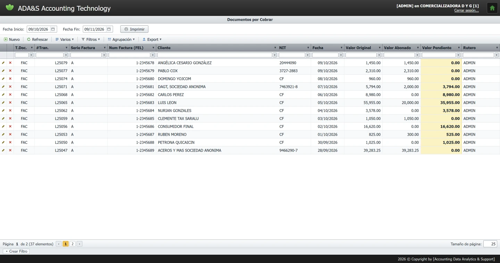
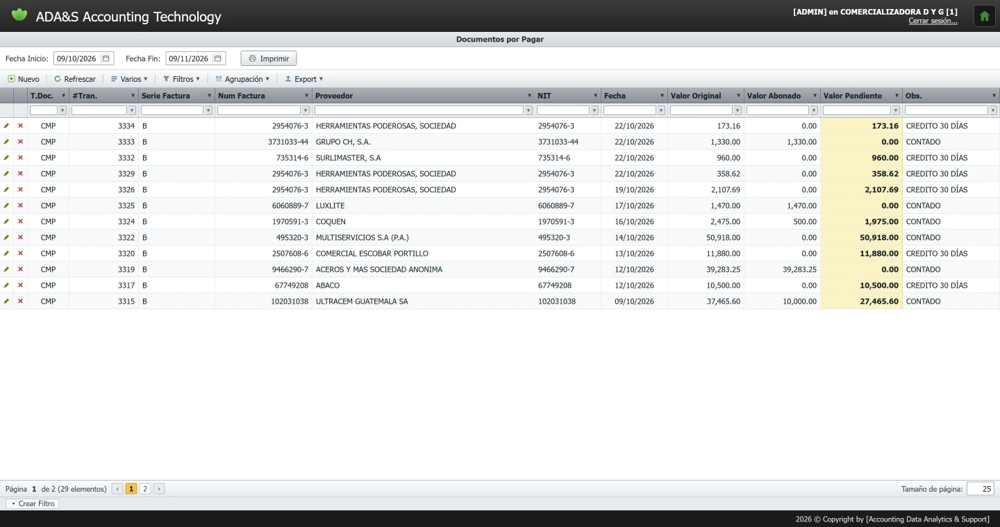
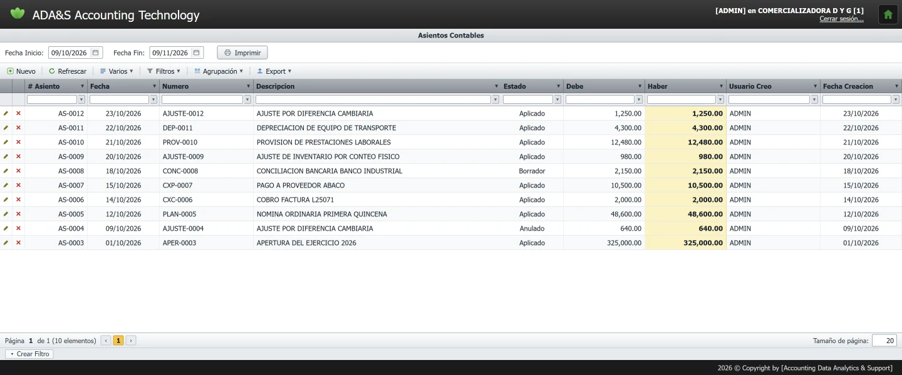